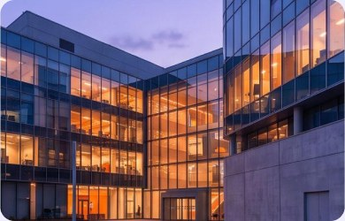

Магистратура или
специализированное высшее?
В 2026 году УрФУ впервые одновременно набирает на классическую магистратуру и специализированное высшее образование.
Магистратура
Классическая магистратура дает углубленные знания по направлению.
- Цель
- Углубленные знания по направлению
- Кому
- Тем, кто хочет расширить образование, компетенции и возможности
- Типы программ
- —
- Программ
- Дальше
- Аспирантура
Специализированное высшее
Федеральный пилотный проект: обучение строится вокруг конкретной профессиональной задачи и роли выпускника.
- Цель
- Конкретная профессиональная задача и роль выпускника
- Кому
- Тем, кто уже понимает, для какой задачи ему нужны знания
- Типы программ
- Исследовательские, профессиональные, управленческие
- Программ
- Дальше
- Аспирантура
Программы
Есть бюджет
Как поступить в УрФУ?
3
Подай документы
- Очная форма
- 20.06 — 17.08
- Очно-заочная и заочная
- 20.06 — 17.08
4
Пройди вступительные испытания
- Очная форма
- 01.07 — 20.08
- Очно-заочная и заочная
- 01.07 — 20.08
Отзывы выпускников
Часто задаваемые вопросы
Новости магистратуры
Все новостиХимики УрФУ вошли в число самых высокооплачиваемых
В Москве выпускникам готовы платить до 145 тыс. рублей, отмечают эксперты

УрФУ побил исторический рекорд приемных кампаний
Заявления на бюджетные места бакалавриата подали почти 50 тысяч абитуриентов
УрФУ — в топ-5 лучших вузов России по партнерству с ИТ-компаниями
Заключено 31 соглашение о сотрудничестве
подай документы
Онлайн через Госуслуги · в 2026 приём шёл 20.06 — 17.08